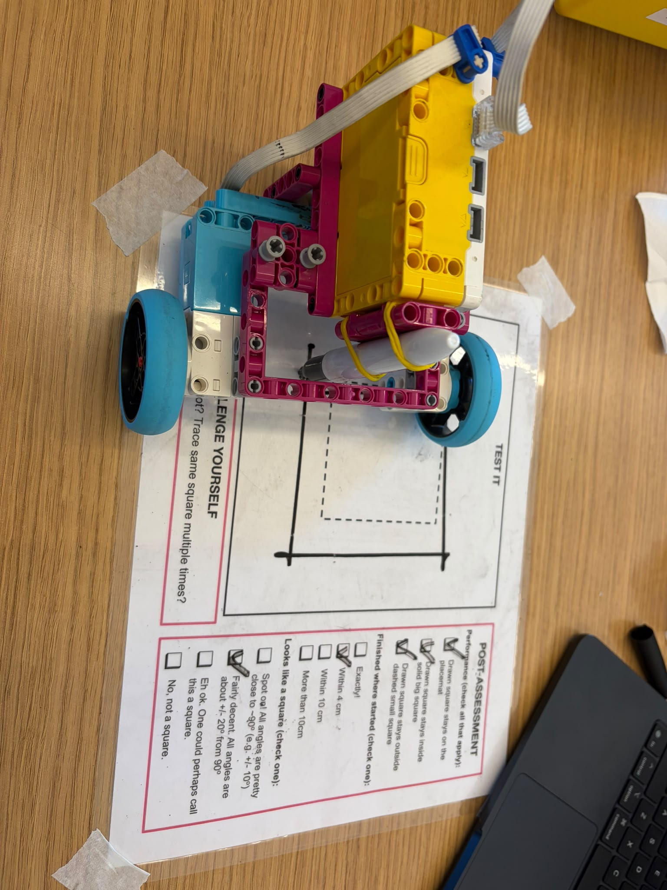

This project page highlights the square image included in the portfolio and provides a place to document the project's visual reference and development.
# Assume setup: left drive motor on port A, right drive motor on port B.
from hub import port, motion_sensor
import runloop
import motor
import motor_pair
# Drive time controls the length of each side.
DRIVE_TIME_MS = 800
# Set the motor speeds in degrees per second.
DRIVE_SPEED = 300
TURN_SPEED = 100
async def main():
# Pair the left and right drive motors.
motor_pair.pair(motor_pair.PAIR_1, port.A, port.B)
# Drive forward and turn left at each of the four corners.
for side in range(4):
# Drive forward along one side.
await motor_pair.move_for_time(
motor_pair.PAIR_1,
DRIVE_TIME_MS,
0,
velocity=DRIVE_SPEED
)
# Reset the gyro to measure the turn from zero.
motion_sensor.reset_yaw(0)
await runloop.sleep_ms(100)
# Turn left in place.
motor_pair.move_tank(motor_pair.PAIR_1, -TURN_SPEED, TURN_SPEED)
# Wait until the gyro measures about a 90-degree turn.
while abs(motion_sensor.tilt_angles()[0]) < 900:
await runloop.sleep_ms(5)
# Stop at the corner before driving the next side.
motor_pair.stop(motor_pair.PAIR_1, stop=motor.BRAKE)
await runloop.sleep_ms(200)
# Unpair the motors after completing the square.
motor_pair.unpair(motor_pair.PAIR_1)
runloop.run(main())